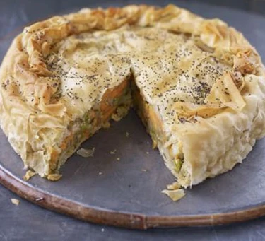

Pie

This impressive vegetarian pie is really versatile - it tastes great hot, warm or cold, so you can make it well ahead.
Ingredients
- 700g potato, sliced
- 400g sweet potato, sliced
- 1 onion, chopped
- 1 tbsp olive oil
- 1 tsp cumin seeds
- 2 garlic cloves, crushed
- 1 red chilli, finely chopped
- 1 thumb-size piece ginger, grated
- 1 tsp each ground cumin, coriander and garam masala
- pinch dried chilli flakes
- 200g frozen pea
- juice 1 lemon, plus extra wedges to serve
- small bunch coriander, chopped
- 25g butter, melted
- 275g pack filo pastry
- ½ tsp poppy seeds
Method
- Put the potatoes in a large saucepan of cold, salted water, then bring to the boil. Turn down and simmer for 5 mins, add the sweet potatoes and continue to cook for 8 mins until just tender.
- Fry the onion in the oil until soft, add the cumin seeds for 1 min, then stir in the garlic, chilli and ginger with the remaining spices. Cook for a further 2-3 mins, then turn off the heat and stir into the potatoes with the peas, lemon juice and coriander.
- Heat oven to 190C/170C fan/gas 5. Halve the filo sheets, and use two-thirds of them, overlapping, to line a 22cm loose-bottomed cake tin with a little overhang. As you lay in each sheet, brush with melted butter and keep the rest covered with a clean tea towel. Spoon in filling and press down lightly. Cover with remaining filo, then fold up overhanging sides and scrunch up pastry near the edges.
- Poke several slits in the top of the pastry and brush with more butter. Sprinkle with the poppy seeds. Bake for 40-45 mins until golden brown. Serve either hot or at room temperature with lemon wedges.
To The top
Home